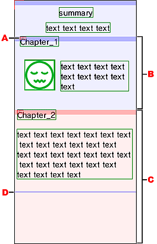

ページ内項目の領域表示
ページ内項目の領域表示とは
ページ内項目があるページで、ページ内項目の領域表示をonにすると、ページ内項目で区切られるページの大きさが分かります。
ページ内項目の領域表示のon/offは、ツールバーから行えます。
ページ内項目の領域表示
|  |
- ページ内項目アイコン。
ページ内項目に設定されているテキストオブジェクトに、ページ内項目アイコンがつきます。
- スクロールが発生しないページ内項目表示。
１画面内に納まり、スクロールが発生しないページを青色で表示します。
- スクロールが発生するページ内項目表示。
１画面内に納まりきらずに、スクロールが発生するページを赤色で表示します。
- １画面の大きさ表示。
スクロールが発生するページでは、１画面の大きさを示す線が表示されます。
|